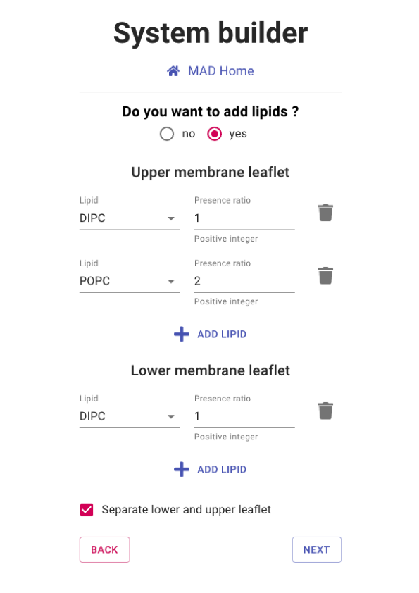

The MAD system builder is a web service that bridges the gap between the INSANE sofware[1] and different collection of molecules.
The INSANE sofware generates initial coordinates for large system of atoms. It is well suited for the generation of phospholipid bilayers
with embeded protein. The user will be able to choose the size and composition of the bilayer and other general properties of the system.
MAD provides default paramters for the setup, but these can be largerly overidden if a user needs to.
The computation of the system will be performed on our cluster and an email can be sent to the user upon completion.
By default, no molecule is selected at startup. You can choose the molecule to be insterted in the membrane from three kinds of sources:
Database of molecules: these are all the public molecules currently stored on the MAD server.
History: these are your private molecules that you previously processed in the molecule builder.
Upload: advanced user can upload the required set coordinates, topology and itp files for a molecule from their hard drive.
If the user does not want to add a molecule, a simple bilayer will be generated. In that case, the user will be prompted to choose a force field version. Otherwise, the force field version is automataically inferred from the chosen/uploaded molecule.
info_outline
Please select the 1pt4 from your history and proceed to next section.

Setting the bilayer compostion
By default, you must select at least one type of lipids and the lower and upper leaflets have identical compositon.
You can modify the lipid bilayer compositon or even remove it entiereely with the following options:
Toggle the addition of lipid: If set to no your system will be a box of water without lipid bilayer.
Add Lipid: Select among different phosphatidylcholine derivative to be added to the bilayer composition. Individual type and ratio can be defined.
Separate lower and upper leaflet: set up common or separated lipidic compositon for the two leaflets.
info_outline
Please select a separate lipidic composition of 1 DIPC and 1 DLPC for the upper and lower leaflets respectively.